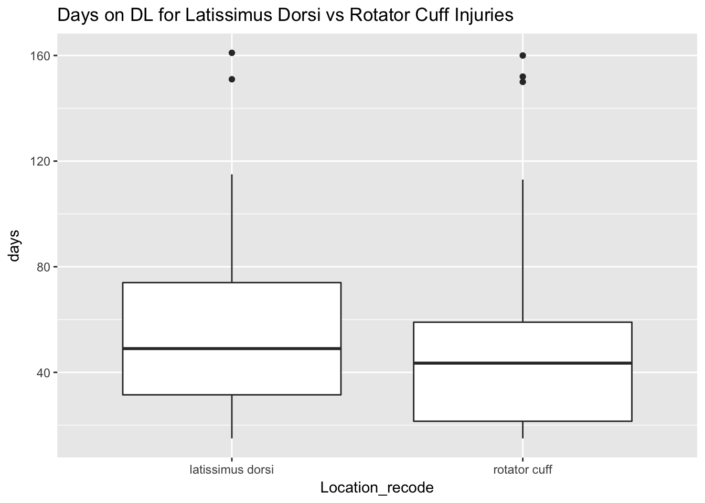
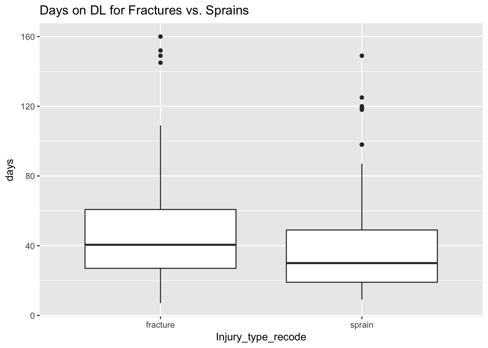
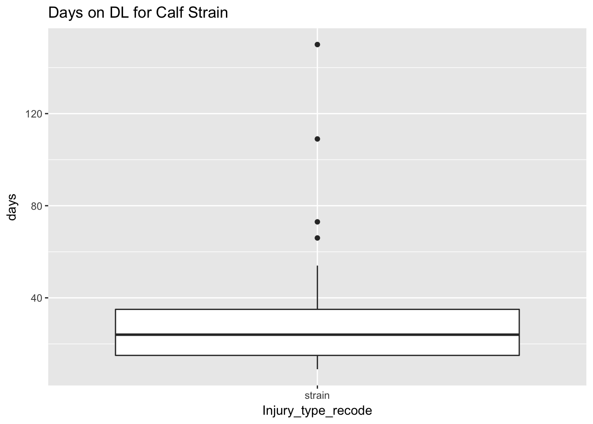
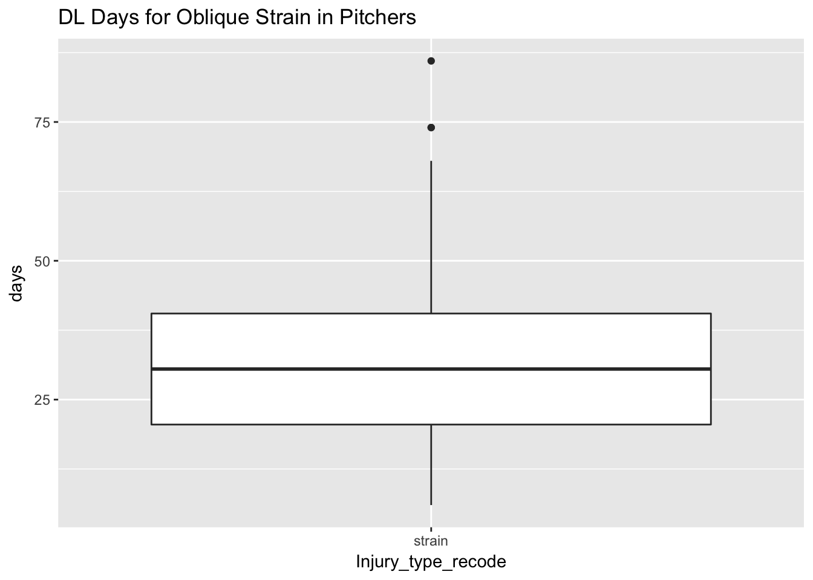
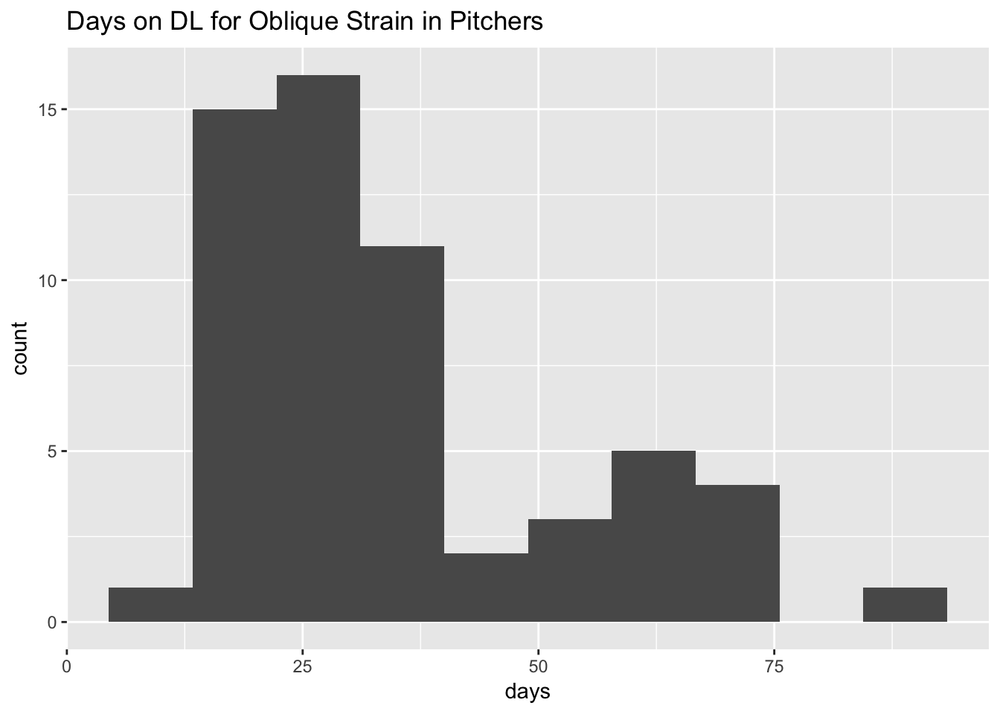

I was interested in the duration of certain injuries for baseball players. It’s difficult to get data on this although I discovered a series of Google Sheets that documented disabled list (DL) stays over the years. I combined these sheets and cleaned these up manually. I entered these into R and crunched the data.
Methods
I downloaded the data from Google and used the tidyverse tools to look at them.
library(dplyr)## Warning: Installed Rcpp (0.12.12) different from Rcpp used to build dplyr (0.12.11).
## Please reinstall dplyr to avoid random crashes or undefined behavior.##
## Attaching package: 'dplyr'## The following objects are masked from 'package:stats':
##
## filter, lag## The following objects are masked from 'package:base':
##
## intersect, setdiff, setequal, unionlibrary(ggplot2)
library(tidyr)
library(lubridate)##
## Attaching package: 'lubridate'## The following object is masked from 'package:base':
##
## dateDL <- read.csv("../datasets/DL2010_2016.csv")
DL <- tbl_df(DL)I converted the dates into Date class for later manipulation. The lubridate package makes this simple.
DL$on_DL <- ymd(DL$on_DL)
DL$off_DL <- ymd(DL$off_DL)First look at DL length was via summary().
summary(DL$days)## Min. 1st Qu. Median Mean 3rd Qu. Max.
## -87.00 20.00 36.00 56.63 74.00 185.00This returned negative DL days. I looked those up…
which(DL$days < 0)## [1] 5 331 428DL[which(DL$days < 0),]## # A tibble: 3 x 19
## Last_name First_name Name DL_type Season Team Position
## <fctr> <fctr> <fctr> <int> <int> <fctr> <fctr>
## 1 Branyan Russell Russell Branyan 15 2010 I
## 2 Bradley Milton Milton Bradley 15 2010 O
## 3 Hairston Jerry Jerry Hairston 15 2010 I
## # ... with 12 more variables: on_DL <date>, off_DL <date>, days <int>,
## # censored_right <lgl>, Location <fctr>, Injury_type <fctr>,
## # Side <fctr>, PlayerId <fctr>, Location_recode <fctr>,
## # Injury_type_recode <fctr>, Side_recode <fctr>, Position_recode <fctr>Some googling showed what happened with these DL stints. Russell Branyan started 2010 on the DL with a herniated disk (source) and came off the DL around April 20 (source). Milton Bradley ended this season on DL after being placed on it in July for knee injury. Hairston was injured in September with a fractured right tibia. I manually recoded Branyan’s off DL date to April 20 and the others to the end of the season.
DL %>% filter(Season == 2010) %>% summarize(max(off_DL))## # A tibble: 1 x 1
## `max(off_DL)`
## <date>
## 1 2010-10-03DL$off_DL[which(DL$days <0)] <- ymd(c("2010-04-20", "2010-10-03", "2010-10-03"))
DL$days[which(DL$days <0)] <- as.integer(DL$off_DL[which(DL$days <0)] - DL$on_DL[which(DL$days <0)])DL Stay by Injury Location
I summarized the length of DL stay by anatomical location.
DL %>% filter(censored_right == F) %>%
group_by(Location_recode) %>%
filter(length(days) > 2) %>%
summarize(n = length(Location_recode), median_days = median(days),
mean_days = mean(days), sd_days = sd(days)) %>%
filter(n >= 10) %>%
arrange(desc(median_days)) %>%
as.data.frame()## Location_recode n median_days mean_days sd_days
## 1 latissimus dorsi 27 49.0 57.96296 37.42118
## 2 rotator cuff 26 43.5 54.34615 44.19316
## 3 elbow 239 39.0 58.84519 45.36024
## 4 hand 61 38.0 39.47541 18.32904
## 5 foot 53 35.0 39.75472 24.85257
## 6 wrist 84 35.0 43.08333 28.67399
## 7 finger 65 33.0 37.95385 25.22612
## 8 ankle 71 32.0 40.39437 28.04969
## 9 achilles 14 31.5 37.57143 23.04415
## 10 knee 157 31.0 40.71975 31.43631
## 11 shoulder 337 31.0 43.38576 31.80736
## 12 thumb 69 31.0 37.37681 24.47033
## 13 triceps 22 31.0 36.45455 24.26781
## 14 forearm 74 29.0 36.59459 24.66594
## 15 biceps 37 28.0 33.51351 24.27118
## 16 oblique 169 28.0 31.43787 17.71158
## 17 abdominal 19 26.0 34.73684 24.20478
## 18 hip 36 26.0 37.05556 31.04738
## 19 quadriceps 56 25.0 32.67857 20.14232
## 20 calf 56 24.0 31.41071 24.99729
## 21 ribs 38 24.0 30.26316 20.64459
## 22 toe 19 24.0 30.57895 19.03014
## 23 back 154 22.5 35.34416 31.94038
## 24 groin 88 22.5 29.70455 20.04659
## 25 intercostal 34 22.5 35.85294 34.36536
## 26 hamstring 240 22.0 29.22083 19.91292
## 27 internal 20 22.0 24.45000 13.75146
## 28 neck 30 22.0 25.83333 16.82175
## 29 head 89 13.0 24.95506 26.81032Injury to the latissiums dorsi was the longest median injury, requiring more time out than extremity injuries.
DL %>% filter(censored_right == F) %>%
filter(Location_recode == "latissimus dorsi" | Location_recode == "rotator cuff") %>%
ggplot(aes(x = Location_recode, y = days)) +
geom_boxplot() +
ggtitle("Days on DL for Latissimus Dorsi vs Rotator Cuff Injuries")
DL Stay by Injury Type
Here is the summary by injury type.
DL %>% filter(censored_right == F) %>%
group_by(Injury_type_recode) %>%
filter(length(days) > 2) %>%
summarize(n = length(Location_recode), median_days = median(days),
mean_days = mean(days), sd_days = sd(days)) %>%
filter(n >= 10) %>%
arrange(desc(median_days)) %>%
as.data.frame()## Injury_type_recode n median_days mean_days sd_days
## 1 Tommy John surgery 49 96.0 101.38776 43.736339
## 2 injury 64 53.5 58.04688 35.894214
## 3 torn 17 51.0 60.64706 43.223173
## 4 surgery 101 50.0 64.49505 47.340812
## 5 fracture 178 40.5 46.00000 27.478805
## 6 discomfort 10 34.0 44.60000 32.249720
## 7 fatigue 13 30.0 39.07692 32.683996
## 8 sprain 180 30.0 37.19444 24.686209
## 9 tendinitis 99 30.0 37.78788 25.041709
## 10 tightness 32 30.0 33.59375 17.119804
## 11 bursitis 13 28.0 35.00000 28.801042
## 12 plantar faciitis 13 28.0 34.53846 16.470253
## 13 inflammation 228 26.0 38.07456 29.987496
## 14 strain 1018 26.0 32.93811 23.575004
## 15 impingement 21 25.0 40.47619 30.874940
## 16 stiffness 13 25.0 25.15385 11.929279
## 17 sore 76 24.5 40.64474 36.694306
## 18 blister 11 23.0 26.00000 8.625543
## 19 contusion 41 22.0 30.00000 18.845424
## 20 spasms 15 19.0 33.20000 31.124634
## 21 bruised 38 17.5 26.36842 18.626371
## 22 laceration 16 16.0 19.87500 8.405355
## 23 concussion 86 13.0 23.65116 26.224716It looked like Tommy John was the longest time out (although I did not include people who had season ending surgeries). This group must have been the people who came back in the season from a prior year’s Tommy John.
Fractures took 6.5 weeks on average to return. Sprains were similar at about a month!
DL %>% filter(censored_right == F) %>%
filter(Injury_type_recode == "fracture" | Injury_type_recode == "sprain") %>%
ggplot(aes(x = Injury_type_recode, y = days)) +
geom_boxplot() +
ggtitle("Days on DL for Fractures vs. Sprains")
DL Stay by Injury Location and Type
Calf Strains
I was interested in calf strains because I just had one myself. I was running intervals with my son and felt a stab in my calf. I limped around for a day or two then started running again after a few more days. This was too soon, and I strained it again. I’m no major league baseball player, but I thought maybe seeing how long they stayed out from a calf strain could help guide my recovery.
I calculated some summary statistics for calf strain.
DL %>% filter(censored_right == F) %>%
filter(Injury_type_recode == "strain" & Location_recode == "calf") %>%
summarize(n = length(Injury_type_recode), median(days), mean(days), sd(days))## # A tibble: 1 x 4
## n `median(days)` `mean(days)` `sd(days)`
## <int> <int> <dbl> <dbl>
## 1 51 24 31.07843 24.89164The median time off was 3 weeks. The mean was considerably longer (1 week more), which suggested the presence of outliers. I plotted the distribution to look at this more closely.
DL %>% filter(censored_right == F) %>%
filter(Injury_type_recode == "strain" & Location_recode == "calf") %>%
ggplot(aes(x = Injury_type_recode, y = days)) +
geom_boxplot() +
ggtitle("Days on DL for Calf Strain")
Oblique Strain for Pitchers
The other injury type often discussed on my favorite baseball podcast is the “oblique strain” for pitchers. This was supposed to be 4-6 weeks according to the podcast’s injury expert, Stephania Bell. I decided to see if my data supported this statement.
DL %>% filter(censored_right == F) %>%
filter(Position_recode == "P" |
Position_recode == "LHP" |
Position_recode == "RHP") %>%
filter(Injury_type_recode == "strain" & Location_recode == "oblique") %>%
summarize(n = length(Injury_type_recode),
median_days = median(days),
mean_days = mean(days, na.rm = T),
sd_days = sd(days, na.rm = T))## # A tibble: 1 x 4
## n median_days mean_days sd_days
## <int> <dbl> <dbl> <dbl>
## 1 58 30.5 34.67241 18.29523The median was indeed within the 4-6 week (28-42 day) window. I plotted out the distribution to see this graphically.
DL %>% filter(censored_right == F) %>%
filter(Position_recode == "P" |
Position_recode == "LHP" |
Position_recode == "RHP") %>%
filter(Injury_type_recode == "strain" & Location_recode == "oblique") %>%
ggplot(aes(x = Injury_type_recode, y = days)) +
geom_boxplot() +
ggtitle("DL Days for Oblique Strain in Pitchers")
In this case it does look like most people are taking between 3 and 6 weeks to come back.
Incidentally, I had originally plotted all of these plots above using histograms, but the data were sparse enough that I thought boxplots looked better. Here’s the data for 58 oblique strains. Which do you think does a better job of summarizing the data: the boxplot above or the histogram below?
DL %>% filter(censored_right == F) %>%
filter(Position_recode == "P" |
Position_recode == "LHP" |
Position_recode == "RHP") %>%
filter(Injury_type_recode == "strain" & Location_recode == "oblique") %>%
ggplot(aes(x = days)) +
geom_histogram(bins = 10) +
ggtitle("Days on DL for Oblique Strain in Pitchers")
In this case it looks like maybe there is a bimodal distribution rather than a normal one with a long tail. The histogram uncovers this while the boxplot cannot.
Discussion
This work introduced my concatenation of several DL datasets. This allowed me to determine DL length for certain injuries, such as my calf strain or the infamous oblique strain in pitchers.
Boxplots seemed to do a better job of describing the distribution than the histograms in several of these situations. There are definitely limitations to boxplots since many people may not understand the quantiles that are involved in creating such a plot. A histogram seems more intuitive to me, and when a specific number of bins were selected, the underlying distribution may emerge better.
Limitations
One limitation was that some of the injuries were season-ending. That is, if someone broke their ankle three weeks before the end of the season, they were taken off of the DL at the end of the season, even though they were not ready to come back to play.
Conclusion
Time on the disabled list varies by injury and location. A boxplot may do a nicer job of summarizing sparse data than a histogram but may miss some variation in the data.